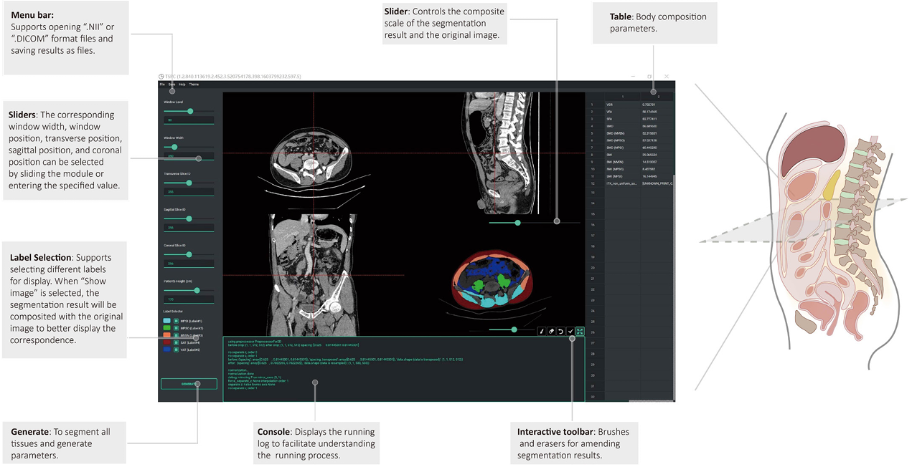
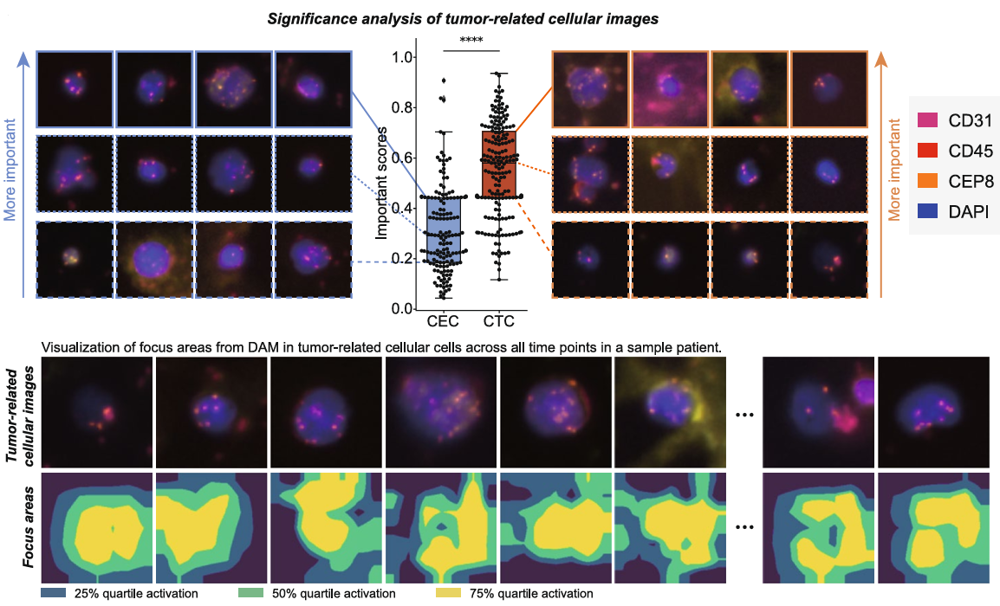
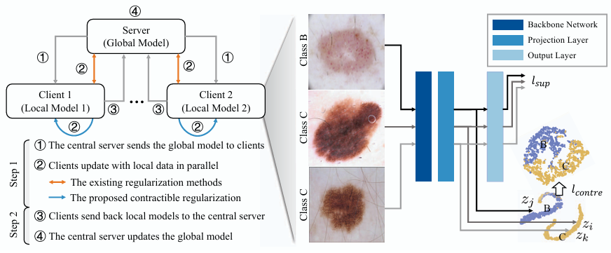
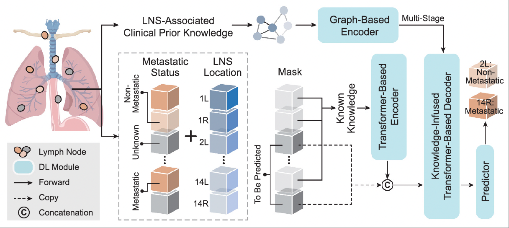
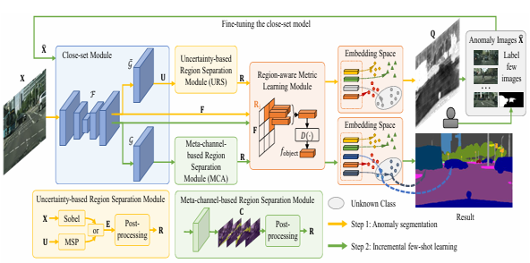
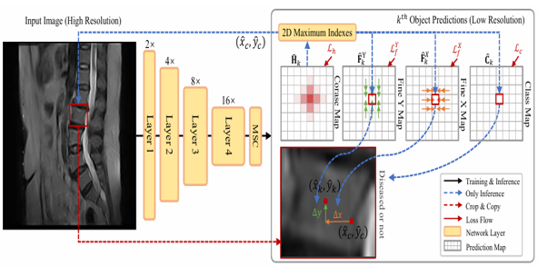
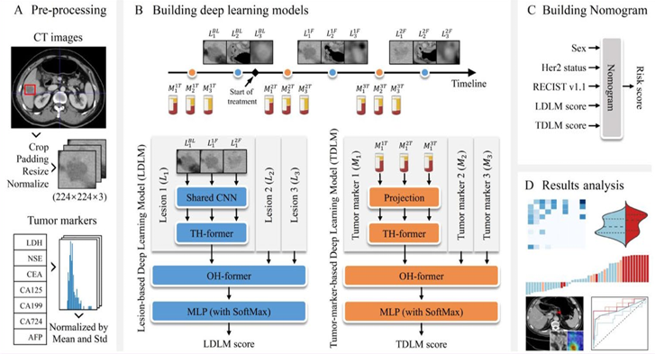
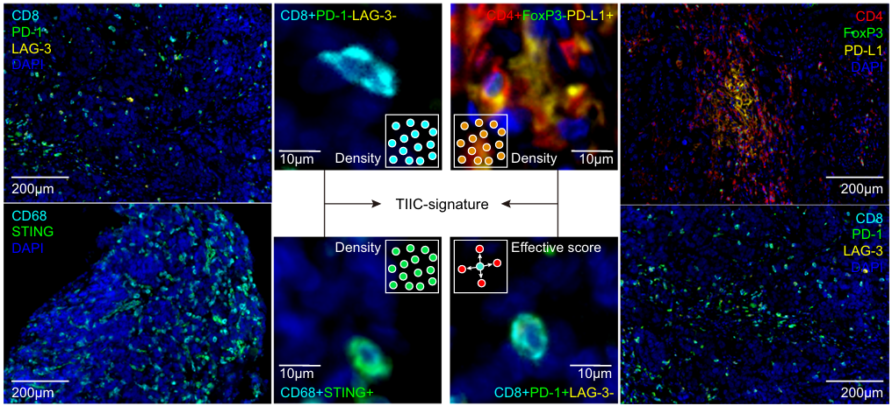
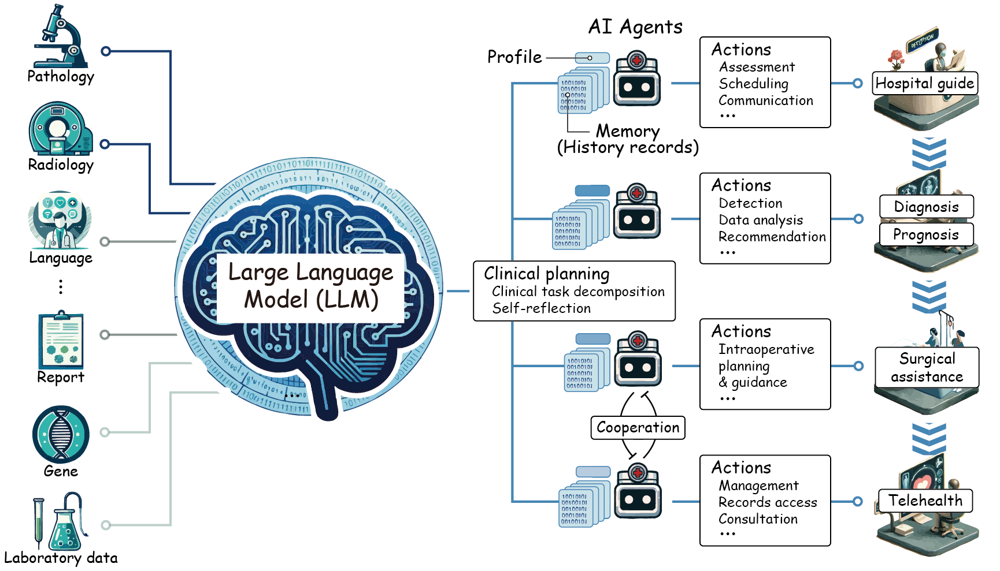

|
Selected Publications
My research focuses on multimodal and cross-scale medical AI, particularly in clinical tasks related to treatment response and prognosis prediction for cancer patients.
Below are selected publications showcasing my recent work. For a full list of publications, please visit my publication list.
Note: # (co-)first author. † First technical lead author in interdisciplinary collaboration.
|

|
Predicting gastric cancer response to anti-HER2 therapy or anti-HER2 combined immunotherapy based on multi-modal data
Zifan Chen#†, Yang Chen#, Yu Sun#, Lei Tang#, Li Zhang, Yajie Hu, Meng He, Zhiwei Li, Siyuan Cheng, Jiajia Yuan, Zhenghang Wang, Yakun Wang, Jie Zhao, Jifang Gong, Liying Zhao, Baoshan Cao, Guoxin Li, Xiaotian Zhang, Bin Dong, Lin Shen.
Signal Transduction and Targeted Therapy (IF: 52.7), 2024
|

|
PAM: A Propagation-Based Model for Segmenting Any 3D Objects across Multi-Modal Medical Images
Zifan Chen#†, Xinyu Nan#, Jiazheng Li#, Jie Zhao, Haifeng Li, Ziling Lin, Haoshen Li, Heyun Chen, Yiting Liu, Lei Tang, Li Zhang, Bin Dong
npj Digital Medicine (IF: 15.1), 2025 (2025年度医学人工智能代表性算法提名）
|
|

|
Associations of subcutaneous fat area and Systemic Immune-inflammation Index with survival in patients with advanced gastric cancer receiving dual PD-1 and HER2 blockade
Meng He#, Zifan Chen#†, Li Zhang, Xiangyu Gao, Xiaoyi Chong, Haoshen Li, Lin Shen, Xiaotian Zhang, Bin Dong, Ziyu Li, Lei Tang
Journal for ImmunoTherapy of Cancer (IF: 12.5), 2023
|
|

|
Predicting response to patients with gastric cancer via a dynamic-aware model with longitudinal liquid biopsy data
Zifan Chen#†, Jie Zhao#, Yanyan Li#, Yilin Li, Xinyu Nan, Huimin Liu, Xujiao Feng, Bin Dong, Lin Shen, Yang Chen, Li Zhang
Gastric Cancer (IF: 5.1), 2025
|
|

|
Contractible Regularization for Federated Learning on Non-IID Data
Zifan Chen#†, Zhe Wu#, Xian Wu, Li Zhang, Jie Zhao, Yangtian Yan, Yefeng Zheng
International Conference on Data Mining (ICDM), Regular paper (acceptance rate: 9.77%), 2022
|
|

|
Deep Knowledge-Infused Transformer for NSCLC Lymph Node Station Metastasis Prediction: Development of an AI-Powered Intraoperative Decision System
Jie Zhao#, Zifan Chen#†, Guangzhengao Yang, Yijiang He, Li Zhang, Bin Dong
Medical Image Computing and Computer Assisted Intervention (MICCAI), Early accept, 2025
|
|

|
Region-Aware Metric Learning for Open World Semantic Segmentation via Meta-Channel Aggregation
Hexin Dong#, Zifan Chen#, Mingze Yuan, Yutong Xie, Jie Zhao, Fei Yu, Bin Dong, Li Zhang
The 31st International Joint Conference on Artificial Intelligence (IJCAI), 2022
|
|

|
Multi-Scale Context-Guided Lumbar Spine Disease Identification with Coarse-to-fine Localization and Classification
Zifan Chen#†, Jie Zhao, Hao Yu, Yue Zhang, Li Zhang
This work's prototype model won Runner-up of the 2020 Spinal Disease Intelligent Diagnosis AI Challenge.
IEEE International Symposium on Biomedical Imaging (ISBI), Oral, 2022
|
|

|
Deep learning model based on multi-lesion and time series CT images for predicting the benefits from anti-HER2 targeted therapy in stage IV gastric cancer
Meng He#, Zifan Chen#†, Song Liu#, Yang Chen#, Huan Zhang#, Li Zhang, Jie Zhao, Jie Yang, Xiaotian Zhang, Lin Shen, Jianbo Gao, Bin Dong, Lei Tang
Insights into Imaging (IF: 4.5), 2024
|
|
|
Advanced prompting as a catalyst: Empowering large language models in the management of gastrointestinal cancers
Jiajia Yuan#, Peng Bao#, Zifan Chen#, Mingze Yuan#, Jie Zhao, Jiahua Pan, Yi Xie, Yanshuo Cao, Yakun Wang, Zhenghang Wang, Zhihao Lu, Xiaotian Zhang, Jian Li, Lei Ma, Yang Chen, Li Zhang, Lin Shen, Bin Dong
The Innovation Medicine, 2023
|
|

|
Predicting response to immunotherapy in gastric cancer via multi-dimensional analyses of the tumour immune microenvironment
Yang Chen#, Keren Jia#, Yu Sun#, Cheng Zhang#, Yilin Li, Li Zhang, Zifan Chen, Jiangdong Zhang, Yajie Hu, Jiajia Yuan, Xingwang Zhao, Yanyan Li, Jifang Gong, Bin Dong, Xiaotian Zhang, Jian Li, Lin Shen
Nature Communications (IF: 15.7), 2022
|
|

|
Large Language Models Illuminate a Progressive Pathway to Artificial Healthcare Assistant: A Review
Mingze Yuan#, Peng Bao#, Jiajia Yuan#, Yunhao Shen#, Zifan Chen, Yi Xie, Jie Zhao, Yang Chen, Li Zhang, Lin Shen, Bin Dong
Medicine Plus, 2024
|
Technology Transfer and Patents
- Successfully transferred two patents on tumor immune microenvironment analysis into a research project.
- Developed a software for 3D segmentation of general objects in multimodal medical imaging, currently under debugging and optimization, 2025.
- Developed an automatic software for tissues segmentation and parameters calculation, applied in the Department of Radiology at Peking University Cancer Hospital, 2024.
- Developed a dynamic CT image analysis and anti-HER2 treatment response prediction software, applied in the Department of Radiology at Peking University Cancer Hospital, 2023.
- Developed a quantitative software for the identification of Siewert type in gastroesophageal junction adenocarcinomas, applied in the Department of Radiology at Peking University Cancer Hospital, 2023.
- Lin Shen, Yang Chen, Bin Dong, Li Zhang, Yilin Li, Jie Zhao, and Zifan Chen, Cancer Treatment Response Prediction System and Its Control Method (癌症治疗反应预测系统及其控制方法), China Patent CN117831789B, 2024.
- Yan Zhang, Jianping Li, Yimeng Jiang, Li Zhang, Haoshen Li, Zifan Chen, Fangfang Fan, Jia Jia, Jie Zhao, Guangzheng'ao Yang, and Xingyu Luo, A Method, System, and Device for Hypertension Prediction Based on Binocular Fusion Network (一种基于双眼融合网络预测高血压的方法、系统和设备), China Patent CN117788473B, 2024.
- Lin Shen, Bin Dong, Yang Chen, Xiaotian Zhang, Yu Sun, Li Zhang, Lei Tang, Jie Zhao, and Zifan Chen, Tumor Treatment Prognosis Prediction Method, Device, Electronic Equipment, and Storage Medium (肿瘤治疗预后预测方法、装置、电子设备及存储介质), China Patent CN116721772B, 2023.
- Zifan Chen, Li Zhang, Jiafu Ji, Bin Dong, Jie Zhao, Lei Tang, Jiazhen Li, and Yiting Liu, Lesion Detection Method and Device Based on Target Images (基于目标影像的病灶检测方法和装置), China Patent CN112634224B, 2023.
- Lin Shen, Yang Chen, Jiangdong Zhang, Bin Dong, Xiaotian Zhang, Li Zhang, Zifan Chen, Yu Sun, Jie Zhao, and Keren Jia, Tumor Immunotherapy Response Prediction Method, Device, Electronic Equipment, and Storage Medium (肿瘤免疫治疗疗效预测方法、装置、电子设备及存储介质), China Patent CN115295154B, 2023.
- Lin Shen, Yang Chen, Jiangdong Zhang, Xiaotian Zhang, Bin Dong, Zifan Chen, Li Zhang, Yu Sun, Jie Zhao, and Keren Jia, Tumor Immunotherapy Response Evaluation Method, Device, Electronic Equipment, and Storage Medium (肿瘤免疫治疗疗效评估方法、装置、电子设备及存储介质), China Patent CN115294129B, 2023.
|
Selected Honors and Awards
- 2025年度医学人工智能代表性算法提名, 2025-12.
- 2015-2016, 2016-2017, 2017-2018 National Scholarship of China (国家奖学金)
- 2022-2023, 2023-2024 Peking University Presidential Scholarship (校长奖学金)
- Zifan Chen, Jie Zhao, and Li Zhang, Runner-up (out of 3,108 teams) of the Spinal Disease Intelligent Diagnosis AI Challenge, 2020.
- Zifan Chen, Hexin Dong, Fei Yu, Jie Zhao, Mingze Yuan, and Li Zhang, Second Prize of the Zero-shot Object Detection of Zhijiang Cup Global Artificial Intelligence Competition, 2021.
- Zifan Chen, Jie Zhao, Li Zhang. 4th Place in the preliminary of the National Digital Ecological Innovation Contest - Intelligent Algorithm Contest, 2021.
- Xing Tao and Zifan Chen, Third Prize of the Zero-shot Segmentation of Zhijiang Cup Global Artificial Intelligence Competition, 2020.
|
|